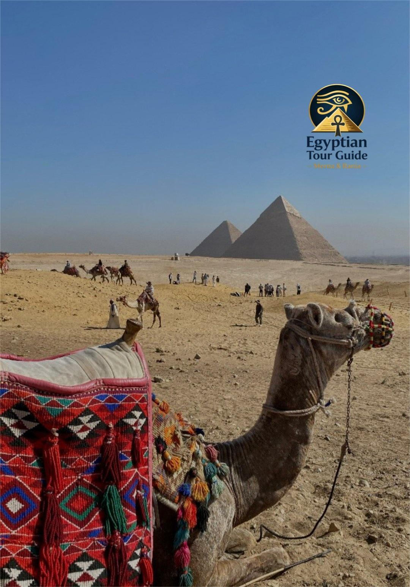
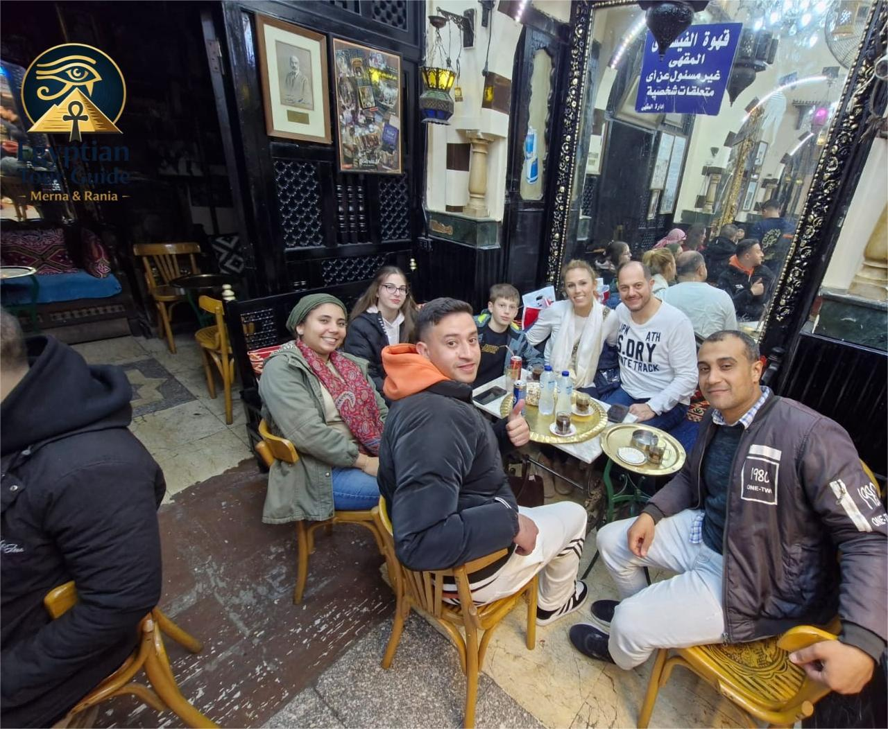
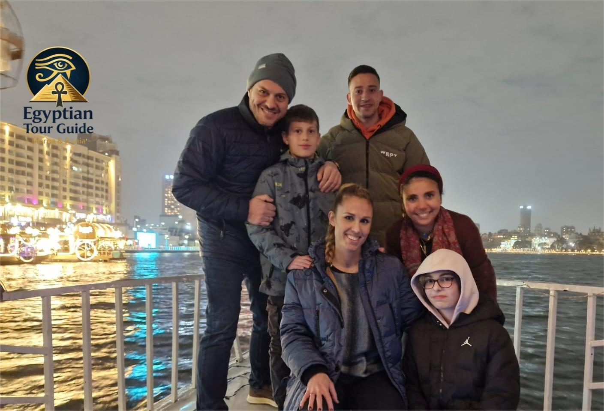
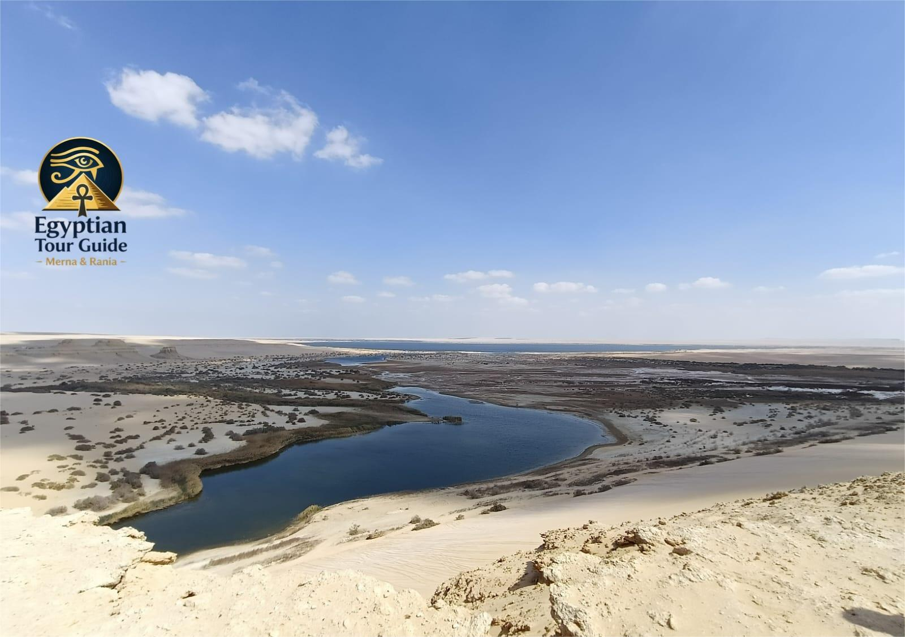

Discover the top things to do in Cairo, including historical sites, museums, and cultural experiences. Whether you're interested in ancient wonders, vibrant markets, or scenic river cruises, Cairo offers a wide range of activities for every traveler. Explore our curated list of must-see attractions and unforgettable experiences in Egypt's bustling capital city.

Experience the thrill of a traditional camel ride near the Great Pyramids of Giza.
Show Info
Immerse yourself in the vibrant atmosphere of Khan El Khalili, one of Cairo’s most famous markets.
Show Info
Experience a traditional Nile felucca ride and enjoy the scenic beauty of Cairo’s river.
Show Info
Experience the beauty of Egypt’s desert landscape with a thrilling safari adventure.
Show Info